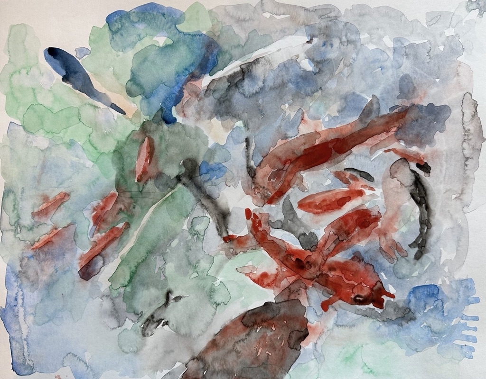

Kelly Normand
Home

Title
Koi at Crematorium
Date
November 2023
Materials Used
Watercolor on Arches Acquarelle palette
Dimensions
10" x 14"
Palette used:
Winsor Green
Cadmium Red Light
Ultramarine Blue
Cobalt Blue
Ivory Black
Selected Works
At Crescent Water
Over Lull Water
Pine at Lull Water
Koi at Crematorium